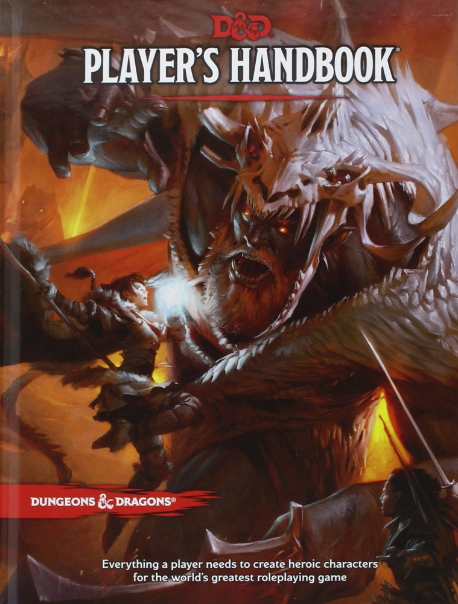

Heroic fantasy · 2014 rules
Dungeons & Dragons 5e
The 2014 fifth edition of Dungeons & Dragons: a fantasy roleplaying game built around a party of adventurers and the stories they create together.

Cover image via Board Game Quest ↗
What's it like?
Create a character with a class and background, then explore, negotiate, cast spells, and battle monsters. Most uncertain actions use a twenty-sided die, while advantage and disadvantage use two dice to reflect favorable or difficult circumstances. Characters gain new abilities as they advance.
Why I'm considering it
It offers familiar fantasy roles and plenty of room for a continuing party story. It could suit a group that enjoys character progression, teamwork, and a mix of roleplaying and tactical encounters.